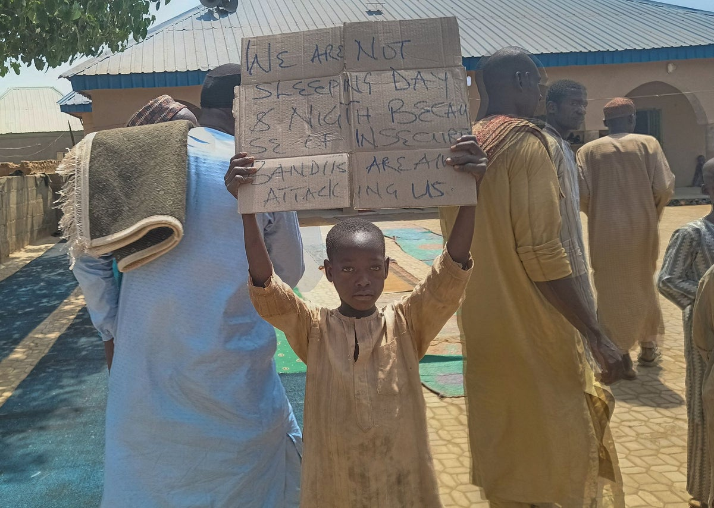

Nigeria: 15 dzieci porwanych ze szkoły

Napastnicy porwali co najmniej 15 uczniów ze szkoły w Nigerii podczas nalotu o świcie w sobotę, kilka dni po tym, jak około 300 dzieci zostało uprowadzonych w innym napadzie z udziałem broni palnej.
Napastnicy wdarli się na teren szkoły w wiosce Sokoto w Gidan Bakuso na północnym zachodzie kraju i zaczęli sporadycznie strzelać, wywołując panikę wśród uczniów. Udało im się uprowadzić 15 uczniów, najstarsi mieli 20 i 15 lat, a wszyscy inni mają mniej niż 13 lat.
Policja nie odpowiada na prośby o komentarz w tej sprawie.
Porwań w szkołach w Nigerii jako pierwsza dokonała grupa dżihadystyczna Boko Haram, która dziesięć lat temu porwała ponad 200 uczennic ze szkoły dla dziewcząt w Chibok w stanie Borno, wywołując światowe oburzenie. Władze podają, że od tego czasu taktykę tę przyjęły gangi przestępcze bez żadnych powiązań ideologicznych, domagające się zapłaty okupu.
Obecnie nigeryjskie siły bezpieczeństwa są rozciągnięte w walce z islamistycznym powstaniem na północnym wschodzie, pozostawiając ogromne połacie ziemi bez policji i uzbrojonych gangów, które mogą swobodnie wędrować, co zwiększa prawdopodobieństwo takich wydarzeń jak w ostatnim czasie.
W Kadunie gubernator stanu powiedział BBC, że co najmniej 28 uczniom porwanym na początku tygodnia udało się uciec porywaczom.